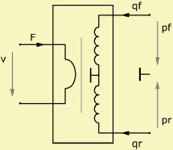
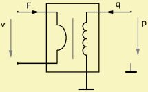
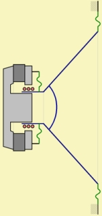

LE Diaphragm Parameters
| Home | LE-Part | Param Editors |
 |
 |
 |
 |
 |
The diaphragm area of a membrane or the aperture area of a duct or hole functions as a transducer, which couples the mechanical to the acoustical domain:
| p = F/S | q = v·S | Zm = Za·S2 |
with F force on the diaphragm, v velocity of the diaphragm, p sound pressure, q volume-velocity, Za = p/q lumped acoustic radiation impedance, Zm = F/v lumped radiation impedance in mechanical terms (impedance network) and S the effective diaphragm area.
All parameters stem from an integral over the diaphragm area. In this way the lumped model reduces any diaphragm-shape to an effective radiation area, S. The area is called also effective area because the integral should include surface vibration. See also chapter LE Diaphragm - Derivation.
Diaphragm or Cross-Section Parameters
AKABAK features several compact transducer-models, for example the
Elec-Dyn Driver.
The transducer may have different types of motors and mechanical components.
However, the mechano-acoustical coupling is identical for all transducers.
All compact transducer-models are using internally
the Diaphragm (LE)-component.
The associated diaphragm-form is also used for components where a cross-section
needs to be specified, such as at the
Duct,
Waveguide,
Coupler and
Enclosure Vented.
There are two ways for specification of the diaphragm or cross-section area:
Reference
The Reference is a link, which couples the LE-part to the BE-part. This coupling involves that the BE-part provides two things: First, the effective vibrating area and, second, the radiation impedance for the diaphragm or aperture. With the help of these two the LE-network can be completed and eventually been solved.
Hence, each component, which involves acoustic transduction and is coupled to BEM needs a link to a vibrating boundary, which we assume to be already specified at the BE-part. This can be a Diaphragm or any other component with driven boundary. Often there is a necessary a reference to both the front and the rear diaphragm.
The associated input-form lets you specify the reference to the boundary element. Select page Reference and pick the BE-element from the look-up-list.
Alternatively, you can specify these links with the help of the Reference Table.
Value
If the LE-component is not coupled to the BE-part then it still would need a value for the radiating area. An example is a band-pass loudspeaker enclosure. If we model only the exterior domain with the help of the boundary element method then the two sides of the membrane would not be directly coupled to the BE-part. Another example is the Direct Sound mode. Here we would model exclusively with the help of lumped elements. In this case there would be no BE-boundary for taking reference.
Shape
Specify the shape of the diaphragm. The shape is used only for a convenient input. Internally, the lumped element method makes only use of the membrane-area.
Size
Depending on Shape the form provides input-fields of diameter or
width and height, respectively.
dD1 is the diameter of a optional circular exclusion.
At some components you can specify the number of apertures, for example
for a vented enclosure with multiple ducts.
The exact naming of the parameters depends on the component.
Formula
The name of the parameters are equal to the formula-identifiers:
|
|
Examples
 |
 |
 |
The mechano-acoustical coupling needs to be expressed as one or multiple lumped diaphragm areas. For refined modeling of transducers you can use
For standard configurations, such as the loudspeaker, there are convenient compact electro-acoustic transducer-components, such as the Elec-Dyn Driver.
Loudspeaker with a Cone-Shaped Diaphragm
The total area can be separated into several sections:
(1) To the front (dust-cap + cone + surround).
(2) To the rear (spider + cone + surround).
(3) Behind the dust-cap.
Often the the model is simplified by assuming identical size of area for the front and rear sides. The area behind the dust-cap is typically assumed to be part of the system and therefore part of the mechanical parameters.
Compression Driver
The concave compression driver has a diaphragm, which features three parts, all of which move with the same velocity.
(1) At compression chamber
(2) Annular suspension
(3) Rear diaphragm
Here, often, diaphragm (1) and (2) are acoustically coupled via a duct-system along the voice-coil, which features masses and springs with values are comparable to the mass of the diaphragm. This in turn yields complex resonance patterns. See paper [31] for a detailed discussion and a lumped element model.
Dome Tweeter
The dome-tweeter is usually modeled with the front diaphragm only. The rear of the dome is regarded as part of the speaker and its effects are part of the TS-parameters (see also component Speaker).
Vibrating Diaphragms
AKABAK can process velocity-distributions with the help of component VibFile. Here the distribution may be measured or stems from another simulation. Important to note in this context is that all integrals, which form the lumped diaphragm area include the distribution (see chapter LE Diaphragm - Derivation). However, there is no feedback of the acoustics onto the particular mechanical vibration-pattern. Hence, regardless of the acoustic response the distribution is the same. Normally, in air-born models there is no strong coupling. Under water this is different, and we cannot make this assumption so easily.